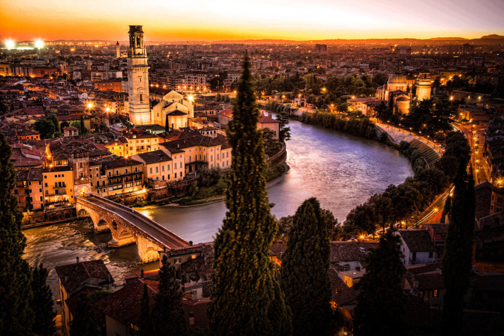

La Toscane (Toscana [tosˈkaːna] en italien) est une des vingt régions d'Italie ; elle est située au centre-ouest du pays et sa capitale est Florence. En 2017, elle compte 3 739 769 habitants, les Toscanes et les Toscans, répartis sur une superficie de 22 987,04 km². Son histoire politique et culturelle exceptionnellement riche lui ont permis de donner sa langue à l'Italie, des auteurs tels que Dante, Boccace, Pétrarque, des politiques tels que Cosme l'Ancien, Machiavel, Catherine de Médicis, des artistes tels que Fra Angelico, Botticelli, Léonard de Vinci, Michel Ange et son patrimoine architectural est immense. Actuellement son économie repose essentiellement sur le tourisme, l'agriculture et l'industrie de la mode.
Lieux à visiter en Toscane
- La piazza dei miracoli
- La tour de Pise
- La cathédrale Notre-Dame de l’Assomption
- Le baptistère Saint Jean de Pise
- Le cimetière Camposanto Monumentale
- Venise -
Les clés de la domination économique de Venise sur l'Italie au Moyen Âge sont l'insularité et l'aisance navale des Vénitiens qui n'a cessé de croître pendant plus d'un millénaire. La région à l'extrémité nord-ouest de la mer Adriatique, où se jettent plusieurs fleuves issus des Alpes, est habitée dès l'Antiquité par des pêcheurs, mariniers et saulniers. Cette zone faisait partie de la région X créée par Auguste. Cette région fut nommée ensuite Venetia du nom des Vénètes, ancien peuple italique intégré dans la République romaine dès le iie siècle av. J.-C. ; Aquilée — sur la terre ferme — était le centre religieux et portuaire important.
Lieux à visiter à Venise
- La place Saint Marc
- La basilique Saint Marc
- Le palais des doges
- Le pont des soupirs
- Les îles de Murano
- Vatican -
Le Vatican, en forme longue l'État de la Cité du Vatican (en italien Stato della Città del Vaticano, [ˈstaːto della tʃitˈta del vatiˈkaːno] ; en latin Status Civitatis Vaticanæ) est un pays d'Europe. Il s'agit du support territorial du Saint-Siège enclavé dans la ville et capitale italienne de Rome. En 2019, il compte 799 habitants5 sur une superficie totale de 0,439 km2, ce qui en fait le plus petit État au monde ainsi que le moins peuplé. Le Vatican se compose de deux entités juridiques distinctes : le Saint-Siège, entité spirituelle, et l'État de la Cité du Vatican, entité temporelle. Le lien entre ces deux entités est le pape, chef du spirituel et du temporel, disposant du pouvoir absolu (exécutif, législatif et judiciaire)6. La colline du Vatican est déjà mentionnée sous la République romaine. De nos jours, le Vatican est la représentation temporelle du Saint-Siège et de l'ensemble des institutions de l'Église catholique romaine : l'État de la Cité du Vatican est, lui, créé le 11 février 1929 aux termes des accords du Latran, signés par l'Italie représentée par Mussolini et par le Saint-Siège représenté par le cardinal Gasparri.
Lieux à visiter au Vatican
- La place Saint-Pierre
- La basilique Saint-Pierre
- La chapelle Sixtine
- Et tous les musées du Vatican
- Rome -
Au centre de la péninsule italienne, Rome sépare l'Italie du Nord de l'Italie du Sud. En effet, la capitale est située à 187 km au nord-ouest de Naples, à 234 km au sud-sud-est de Florence, à 372 km à l'ouest-nord-ouest de Bari, à 424 km au nord de Palerme et à 479 km au sud-est de Milan. La ville est située dans la région du Latium, à la confluence de l'Aniene et du Tibre. Le centre-ville est situé à environ 25 kilomètres de la côte de la mer Tyrrhénienne, mais l'agglomération romaine s'étend jusqu'à celle-ci par le biais du Municipio XIII formant l'actuel quartier d'Ostie, appelée aussi Lido di Roma (Lido signifie « littoral » en Italien). C'est pourquoi Rome est une des rares capitales européennes à se prévaloir d'un littoral, et d'environ 20 km de plages. À proximité de la ville, on trouve à 30 km au nord-est le lac de Bracciano, et au sud-est à environ 20 km du centre les Castelli Romani, au milieu des collines des Monts Albains.
Lieux à visiter à Rome
- Le Colisée
- Le forum romain
- Le Panthéon
- La fontaine de Trévi
- La piazza Navona
- Florence -
Florence a été fondée sous le nom latin de Florentia pendant l'époque romaine, en 59 av. J.-C., près du fleuve Arno. Elle n'a été qu'une simple bourgade jusqu'au xiie siècle, début de son essor économique et artistique qui dura jusqu'au xvie siècle. Du xiie au xive siècle, Florence connaît de profonds bouleversements politiques et sociaux avec l'essor des riches familles de marchands groupées au sein du popolo, et le conflit entre les guelfes et gibelins qui partage l'Italie et Florence en deux. Ces deux processus accompagnent le développement de la commune qui, comme dans les autres villes de l'Italie septentrionale, désigne l'émergence de gouvernements autonomes qui ont acquis leur souveraineté après une lutte féroce débouchant sur la paix de Constance, octroyée par l'empereur Frédéric Ier en 1183. Les communes italiennes y ont acquis des droits souverains qui en faisaient de véritables cités-États.
Lieux à visiter à Florence
- Le Duomo et sa piazza
- La galerie des offices
- La galerie des offices
- Piazza della Signoria
- Cupola del Brunelleschi
- Vérone -
Vérone (en italien Verona /ve'ro:na/) est une très ancienne ville italienne, dans la région de Vénétie (plaine du Pô), sur les rives de l'Adige, à proximité du lac de Garde. Fondée au ier siècle av. J.-C., la ville historique de Vérone a connu des périodes d'expansion aux xiiie et xive siècles et sous la République de Venise. Un nombre remarquable de monuments de l'Antiquité, de l'époque médiévale et de la Renaissance y sont préservés. À la suite de la tragédie Roméo et Juliette de William Shakespeare parue en 1597, dont l'action se situe dans cette ville, la cité devient la ville romantique la plus célèbre du monde, baptisée la « ville des amants de Vérone » (maison de Juliette à Vérone).
Lieux à visiter à Vérone
- La maison de Juliette
- La piazza bra
- La piazza delle erbe
- La basilica di san zeno maggiore
- Le castelvecchio